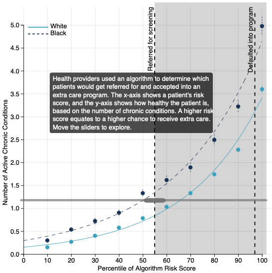

Uncovering Algorithmic Bias [Univ. Chicago]
I designed data visualizations for the Algorithmic Bias project as they published their Algorithmic Bias Playbook. This work was conducted through the Center for Applied Artificial Intelligence (CAAI) at the University of Chicago Booth School of Business.
Supervisor: Emily Joy Bembeneck
Description: Algorithmic bias is everywhere and is difficult to spot. Work done by Obermeyer et al shows that bias exists in commercial algorithms in health care systems, leading to Black patients being unfairly deemed “healthier” than equally sick White patients. This leads to a difference in care and has huge impacts on the health of these patients.

I created new versions of the line graphs published in the paper. These versions are static in the playbook, but are interactive in the web release (forthcoming).
Repositories/Websites
Visualization Repository: the code for my visualizations.
Algorithmic Bias headquarters: the landing page for more information about the work on algorithmic bias.